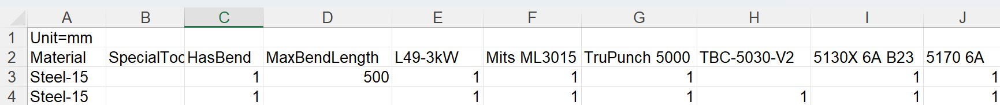
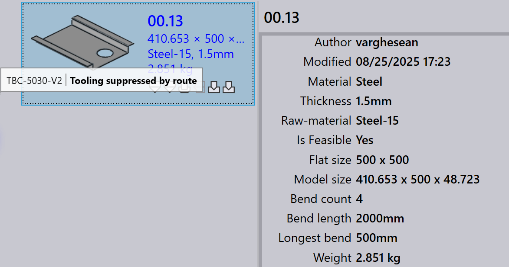

Routes
Berdasarkan lisensi Anda, TruSmartCAM akan memiliki set mesin CAM default dan konfigurasi routing. Anda dapat menyesuaikan konfigurasi ini agar sesuai dengan alur kerja manufaktur spesifik Anda.

Pada halaman routes, mesin direpresentasikan sebagai stasiun pemrosesan, masing-masing diidentifikasi oleh gambar dan nama.
Routes menghubungkan stasiun-stasiun, menunjukkan jalur alur kerja yang mungkin dapat diikuti oleh part dari awal hingga akhir. Anda dapat melihat properti stasiun dengan mengarahkan kursor ke stasiun dengan mouse.
Klik pada stasiun akan membuka panel dengan informasi detail tentang stasiun tersebut, termasuk nama, jenis, dan status ketersediaannya.
-
Untuk mengedit ketersediaan stasiun, klik pada stasiun dan aktifkan checkbox _Diaktifkan di panel.
Export/Import routing configurations
Fitur Export/Import memungkinkan pengguna untuk menyimpan konfigurasi routing mereka saat ini dan menerapkannya ke proyek atau instance lain.

Export CAD routes
Klik Export CAD routes… untuk menyimpan semua aturan kondisi route saat ini ke file CSV.

CSV mencantumkan material dan kondisi routing mereka. Kolom merepresentasikan nama mesin dan kondisi (misalnya, Material, SpecialTool, HasBend, MaxBendLength). Nilai 1 menunjukkan routing ke mesin; sel kosong berarti tidak ada routing.
Anda dapat memodifikasi CSV ini dan mengimpornya kembali ke sistem.
Import CAD routes
Gunakan Import CAD routes… untuk menerapkan file CSV yang telah dimodifikasi.
| Sebelum mengimpor, jalankan Reset CAD routes untuk menghapus konfigurasi yang ada. |
Sistem membaca file dan memperbarui kondisi route. Aturan dapat mencakup kondisi seperti HasBend dan MaxBendLength.

Jika HasBend = 1, aturan berlaku untuk part dengan bend.
Jika MaxBendLength =1, aturan lebih lanjut membatasi berdasarkan panjang bend terpanjang part.
Part 00.13 memiliki bend terpanjang 500 mm. Ini cocok dengan aturan pertama, jadi TBC-5030-V2 dikecualikan.

Part 00.20 memiliki bend terpanjang 600 mm. Ini tidak cocok dengan aturan pertama dan mengikuti aturan kedua, routing ke semua mesin.

Reset CAD routes
Gunakan Reset CAD routes untuk menghapus semua konfigurasi yang ada sebelum mengimpor CSV baru.
| Jika Anda mengimpor tanpa mereset, aturan lama dapat berkonflik dengan yang baru. |